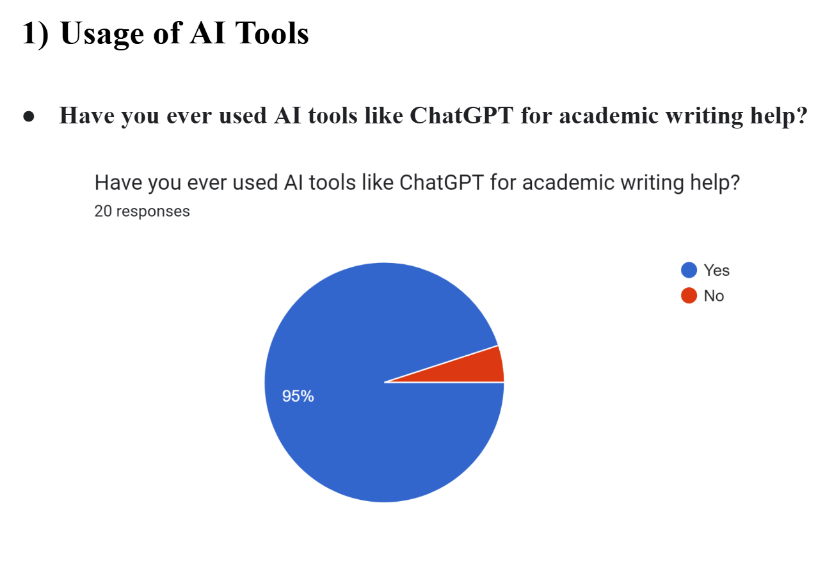
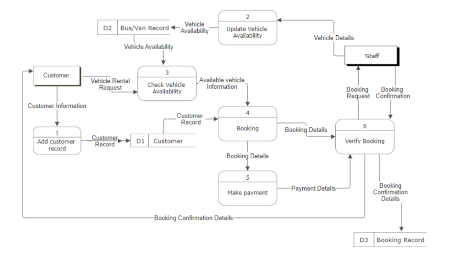

My Projects

TIS Survey & System UI
This project explored survey analysis and basic user interface design using Google Forms and UI wireframes. It involved presenting academic data trends and proposing system improvements.
View on GitHub

SAD System Analysis
A collaborative project involving system analysis, DFD, and context diagrams for a vehicle booking platform. Documentation includes detailed processes and use case design.
View on GitHub